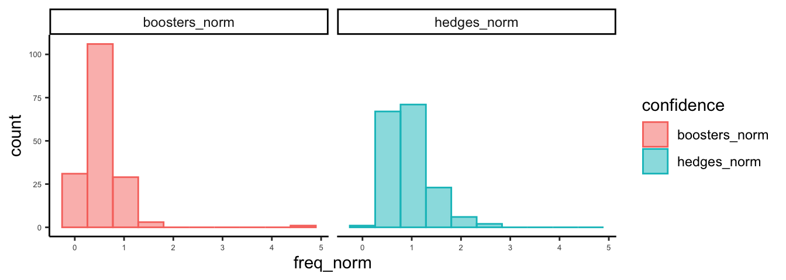
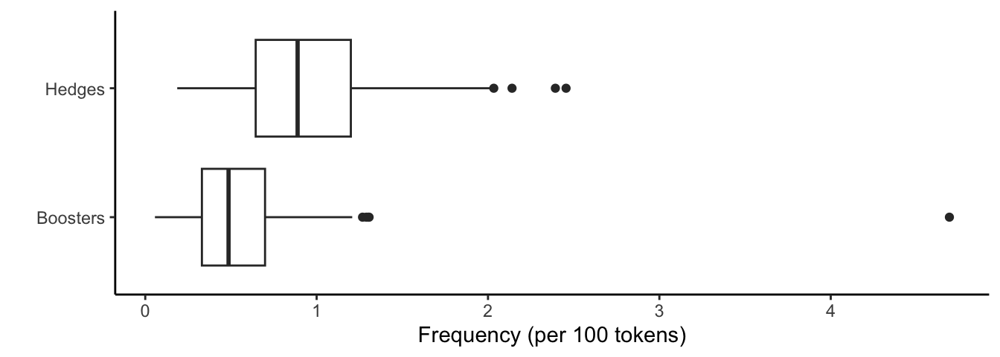
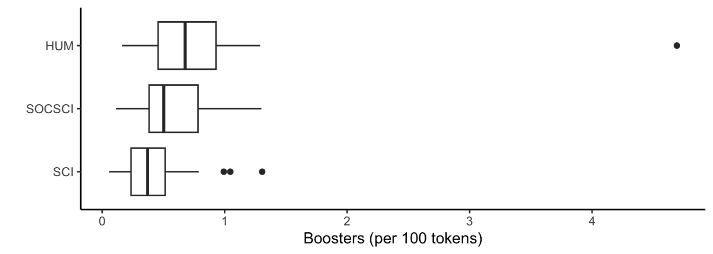
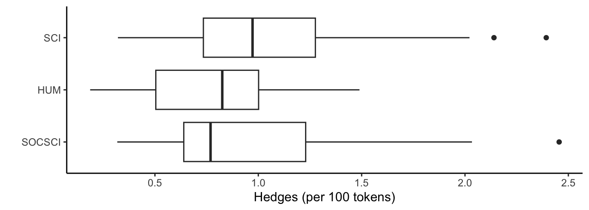
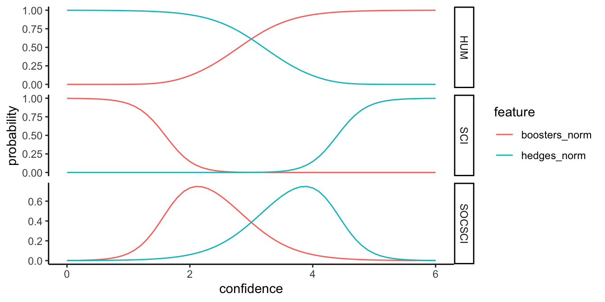

library(tidyverse)
library(quanteda)
library(nnet)
library(gt)8 Logistic Regression
This is a script that walks you through basic logistic and multinomial regression. Logistic regression can be applied to binary variables. In our textbook, Brezina walks though an examples applied to lexico-grammar. What are the conditions that predict whether the definite article (the) or the indefinite article (“a”) occur? Or predict which relative pronoun (that or which) is used?
Multinomial regression can be applied to situations where we have more than 2 outcome variables AND those categories are UNORDERED. Here, we’ll look at writing in the Humanities, Sciences, and Social Sciences. There is not inherent order to these categories. If we did have ORDERED categories, we would use ordinal regression. These are very similar procedures, with similar reporting conventions.
We’re going to start by preparing a versions of the that/which data that Brezina describes starting on pg. 130
We have student writing from the US in the MICUSP data and from the UK in the BAWE data. Rather than going through the tagging process, we’ll load in some data that’s already been tagged using udpipe and the Penn-Treebank tagset:
https://www.ling.upenn.edu/courses/Fall_2003/ling001/penn_treebank_pos.html
8.1 Load the needed packages
Load metadata:
load("../data/micusp_meta.rda")
load("../data/bawe_meta.rda")Code
micusp_meta |>
head(10) |>
gt() |>
tab_options(table.font.size = px(10),
quarto.disable_processing = TRUE) |>
as_raw_html()| doc_id | paper_title | paper_discipline | student_level | discipline_cat | level_cat | student_gender | speaker_status | speaker_l1 | paper_type | paper_features |
|---|---|---|---|---|---|---|---|---|---|---|
Code
micusp_meta |>
head(10) |>
gt() |>
tab_options(table.font.size = px(10),
quarto.disable_processing = TRUE) |>
as_raw_html()| doc_id | paper_title | paper_discipline | student_level | discipline_cat | level_cat | student_gender | speaker_status | speaker_l1 | paper_type | paper_features |
|---|---|---|---|---|---|---|---|---|---|---|
8.2 Case 1
Preparing linguistic data for logistic regression is often a complex process, as it will be for this lab. Our problem comes from Brezina (pg. 130) and concerns that vs. which:
While writing this chapter, I encountered the following situation: my word processor underlines with a wiggly line a phrse that included the relative pronoun which, signaling a potential grammatical error or inaccuracy. The correction off correction offered was to either add a comma in front of which or use the relative pronoun that instead., with the reasoning being as follows: ‘If these words are not essential to the meaning of your sentences, use “which” and separate the words with a comma.’
We are going to mimic Brezina’s experiment, but instead of using the BE06 and AmE06 corpora, we will use the Michigan Corpus of Upper-Level Student Papers (MICUSP) and the British Academic Written English corpus (BAWE).
To save time, the data has already been tagged with udpipe. To tag files this way is relatively straightforward. Don’t run the chunk below, but you can see how it would work if you uncommented the code lines.
# udmodel <- udpipe_load_model(file = "english-ewt-ud-2.5-191206.udpipe")
# target_folder <- "/Users/user/Downloads/bawe_udpipe/"
# files_list <- list.files("/Users/user/Downloads/bawe_body", full.names = T)
tag_text <- function(x){
file_name <- basename(x) %>% str_remove(".txt")
output_file <- paste0(target_folder, file_name, "_udp.txt")
txt <- readr::read_file(x) %>% str_squish()
annotation <- udpipe_annotate(udmodel, txt, parser = "none") %>%
as.data.frame() %>%
dplyr::select(token, xpos) %>%
unite("token", token:xpos)
new_txt <- paste(annotation$token, collapse=" ")
write.table(new_txt, output_file, quote = F, row.names = F, col.names = F)
}
# lapply(files_list, tag_text)8.3 Prepare tokens
Here, again, you could download the full data set and place it the data directory. Then, we could down-sample our data.
set.seed(123)
us_files_list <- list.files("../data/micusp_udpipe", full.names = T)
uk_files_list <- list.files("../data/bawe_udpipe", full.names = T)
us_sample <- sample(us_files_list, 100)
uk_sample <- sample(uk_files_list, 100)To save time, we’ll load the down-sampled data directly.
load("../data/student_samples.rda")And tokenize our sub-sample.
us_tokens <- us_sample %>%
corpus() %>%
tokens(what = "fastestword")
uk_tokens <- uk_sample %>%
corpus() %>%
tokens(what = "fastestword")8.3.1 Select token sequences
For this experiment, we want to select sequences that have have noun followed by that or which. Importantly, we also want sequences that have a comma between the noun and the relative pronoun. Imagine a possible phrase like: however, the research [that/which] has been done has focused primarily on. We would want to capture all of these possible combinations:
- research that
- research which
- research, that
- research, which
We’ll begin by generating what are called skipgrams. A skipgram “skips” over a specified number of tokens. We’ll generate skipgrams 2 to 3 tokens long and skipping over 0 or 1 tokens. Thus, we’ll generate a series of phrases, 2 to 3 tokens in length.
us_grams <- tokens_skipgrams(us_tokens, n=2:3, skip=0:1, concatenator = " ")
uk_grams <- tokens_skipgrams(uk_tokens, n=2:3, skip=0:1, concatenator = " ")For our purposes, we don’t need all of these. So we want to begin culling our tokens. First we know that we’re only interested in those ngrams ending with that or which. So we can first identify those.
us_grams <- tokens_select(us_grams, "that_\\S+$|which_\\S+$", selection = "keep", valuetype = "regex", case_insensitive = T)However, we need to sort further. Our tokens of interest can appear in a variety of contexts. For example, “that” frequently appears following a verb of thinking or speaking, as it does here: has_VHZ discussed_VVN that_WDT.
We only want those instances where “that” or “which” is modifying a noun, as in this example: belief_NN that_WDT.
So next, we’ll select only those ngrams that being with a word that’s been tagged as a noun (having the _NN tag).
us_grams <- tokens_select(us_grams, "^[a-z]+_NN\\d?", selection = "keep", valuetype = "regex", case_insensitive = T)Finally, we want only those 3 token sequences that have a medial comma like: earth_NN ,_, that_WDT
us_grams <- tokens_select(us_grams, "\\s[^,]+_[^,]+\\s", selection = "remove", valuetype = "regex", case_insensitive = T)So let’s repeat the sorting process with the UK data.
uk_grams <- uk_grams %>%
tokens_select("that_\\S+$|which_\\S+$", selection = "keep", valuetype = "regex", case_insensitive = T) %>%
tokens_select("^[a-z]+_NN\\d?", selection = "keep", valuetype = "regex", case_insensitive = T) %>%
tokens_select("\\s[^,]+_[^,]+\\s", selection = "remove", valuetype = "regex", case_insensitive = T)8.3.2 Structuring the data
Now let’s convert our data structure to a data frame.
us_grams <- data.frame(feature = unlist(us_grams), stringsAsFactors = F)
uk_grams <- data.frame(feature = unlist(uk_grams), stringsAsFactors = F)| feature |
|---|
| feature |
|---|
We’re going to follow Brezina’s recommendation on pg. 122 for stucturing and idenfiying our variables using some prefixing.
us_grams <- us_grams %>%
rownames_to_column("doc_id") %>%
mutate(doc_id = str_replace(doc_id, "_\\S+$", "")) %>%
mutate(comma_sep = ifelse(str_detect(feature, ",") == T, "B_yes", "A_no")) %>%
mutate(rel_type = ifelse(str_detect(feature, "that_") == T, "A_that", "B_which"))
uk_grams <- uk_grams %>%
rownames_to_column("doc_id") %>%
mutate(doc_id = str_replace(doc_id, "_\\S+$", "")) %>%
mutate(comma_sep = ifelse(str_detect(feature, ",") == T, "B_yes", "A_no")) %>%
mutate(rel_type = ifelse(str_detect(feature, "that_") == T, "A_that", "B_which"))Now let’s join some metadata. We’ll select the speaker_status variable. Again, we’ll clean it using some prefixing. Finally, we’ll add a column that identifyies the location as being in US.
us_grams <- us_grams %>%
left_join(select(micusp_meta, doc_id, speaker_status), by = "doc_id") %>%
mutate(speaker_status = str_replace(speaker_status, "NNS", "B_NNS")) %>%
mutate(speaker_status = str_replace(speaker_status, "^NS$", "A_NS")) %>%
mutate(nat_id = "A_US")The UK data doesn’t have a speaker_status column but it does have a first_language column. We can make a column that matches the US data using ifelse().
uk_grams <- uk_grams %>%
left_join(dplyr::select(bawe_meta, doc_id, speaker_l1), by = "doc_id") %>%
mutate(speaker_l1 = ifelse(str_detect(speaker_l1, "English") == T, "A_NS", "B_NNS")) %>%
rename(speaker_status = speaker_l1) %>%
mutate(nat_id = "B_UK")8.3.3 Logistic regression model
Before running the regression model, we can combine the two tables. We also need to convert some character columns into factors (or categorical variables).
rel_data <- bind_rows(us_grams, uk_grams) %>%
mutate_at(3:6, factor)To understand how to set up the model, it might help to refer to pg. 119. Our outcome variable is that/which or the rel_type column. For logistic regression, this must be binary. For our first model, we’ll set up 3 predictor variables:
- comma_sep: whether or not a comma appears between the noun and the relative pronoun
- nat_id: whether the student is in the US or the UK
- speaker_status: whether the student is a native speaker of English or not
glm_fit <- glm(rel_type ~ comma_sep + nat_id + speaker_status, data = rel_data, family = "binomial")8.3.4 Evaluating the model
Logistic regression has some prerequisites and assumptions. One of which is there is no colinearity between predictors. One tool for colinearity diagnostics is VIF. VIF (or variance inflation factors) measure the inflation in the variances of the parameter estimates due to collinearities that exist among the predictors and range from 1 upwards. The numerical value for VIF tells you (in decimal form) what percentage the variance is inflated for each coefficient. For example, a VIF of 1.9 tells you that the variance of a particular coefficient is 90% bigger than what you would expect if there was no multicollinearity — if there was no correlation with other predictors.
car::vif(glm_fit) comma_sep nat_id speaker_status
1.001520 1.079571 1.078274 Now let’s look at odds ratios. We can calculate the odds ratio by exponentiating the coefficients (or log odds). For example on pg. 125 of Brezina, he shows an estimate of 6.802 for Context_type B_determined. If we were to exponentiate that value:
exp(6.802)
We would get odd roughly equal to 900, as Brezina’s table shows. So here we could calculate our odds ratios and our confidence intervals:
exp(cbind(OR = coef(glm_fit), confint(glm_fit)))
For a nicely formatted output, we can use the gtsummary package to put those values into a table.
gtsummary::tbl_regression(glm_fit, exponentiate = TRUE) |>
gtsummary::add_global_p() |>
gtsummary::add_glance_table(
include = c(nobs, logLik, AIC, BIC))Characteristic |
OR 1 |
95% CI 1 |
p-value |
|---|---|---|---|
| comma_sep | <0.001 | ||
| A_no | — | — | |
| B_yes | 4.90 | 4.29, 5.60 | |
| nat_id | <0.001 | ||
| A_US | — | — | |
| B_UK | 1.43 | 1.29, 1.60 | |
| speaker_status | 0.7 | ||
| A_NS | — | — | |
| B_NNS | 1.02 | 0.90, 1.16 | |
| No. Obs. | 6,761 | ||
| Log-likelihood | -4,067 | ||
| AIC | 8,143 | ||
| BIC | 8,170 | ||
| 1
OR = Odds Ratio, CI = Confidence Interval |
|||
While no exact equivalent to the R2 of linear regression exists, an R2 index can be used to assess the model fit. Note that pseudo R2 have been critiqued for their lack of accuracy. See Brezina pg. 125.
We can also generate what Brezina calls a C-index. The C-index is the area under an ROC. The ROC is a curve generated by plotting the true positive rate (TPR) against the false positive rate (FPR) at various threshold settings while the AUC is the area under the ROC curve. As a rule of thumb, a model with good predictive ability should have an AUC closer to 1 (1 is ideal) than to 0.5. These can be calculated and plotted using packages like ROCR. You can find examples of the plots and the resulting AUC values as in this one:
https://www.r-bloggers.com/a-small-introduction-to-the-rocr-package/
For our purposes we’ll just use the Cstat() function from *DescTools.
DescTools::Cstat(glm_fit)[1] 0.64823118.4 Case 2
Let’s trying making another model. This time, we’ll just use the untaggged MICUSP data. Note that our choices are a little different here. We’re leaving in punctuation and numbers. This is because we’ll be doing something a little different with this tokens object.
8.4.1 Prepare the data
load("../data/micusp_mini.rda")
micusp_tokens <- micusp_mini %>%
corpus() %>%
tokens(include_docvars=T, remove_punct = F, remove_numbers = F, remove_symbols = T, what = "word")Now we load in a dictionary. This dictionary has almost 15,000 entries. It is organized into only 2 categories: phrases that communicate high confidence and those that communicate hedged confidence. Go and look at the Hyland article on stance and engagement for more on the importance of these kinds of features to academic writing.
hb_dict <- dictionary(file = "../data/hedges_boosters.yml")Next we create a new tokens object from our original one. By using tokens_lookup() with our dictionary, we will create groupings based on our dictionary. Note that our dictionary has only 1 level. But if we can a more complex taxonomy, we can specify which level of the taxonomy we’d like to group our tokens under.
hb <- micusp_tokens %>%
tokens_lookup(dictionary = hb_dict, levels = 1) %>%
dfm() %>%
convert(to = "data.frame") %>%
mutate(
tokens_total = ntoken(micusp_tokens),
hedges_norm = (confidencehedged/tokens_total)*100,
boosters_norm = (confidencehigh/tokens_total)*100,
)8.5 Check assumptions
This time we’ll do a quick check for colinearity before building the model by calculating the correlation between frequencies of hedges and boosters
cor(hb$hedges_norm, hb$boosters_norm)[1] 0.02185522How does this look? Check Brezina pg. 121.
Now lets check some distributions. First we’ll create a data structure for ggplot.
hb_df <- hb %>%
select(hedges_norm, boosters_norm) %>%
pivot_longer(everything(), names_to = "confidence", values_to = "freq_norm")Now plot histograms.
ggplot(hb_df,aes(x = freq_norm, color = confidence, fill = confidence)) +
geom_histogram(bins = 10, alpha=.5, position = "identity") +
theme_classic() +
theme(axis.text = element_text(size=5)) +
facet_wrap(~ confidence)
And boxplots.
ggplot(hb_df,aes(x = confidence, y = freq_norm)) +
geom_boxplot() +
xlab("") +
ylab("Frequency (per 100 tokens)") +
scale_x_discrete(labels= c("Boosters", "Hedges")) +
theme_classic() +
coord_flip()
How do these look to you?
8.6 Format the data
Now let’s create some data for our regression models. For this, we’ll combine our frequency counts with some metadata: discipline category, speaker status, gender, and paper type. We’ll also move the text_id to row names to exclude that column from further processing.
lr_df <- hb %>%
mutate(doc_id = str_remove_all(doc_id, ".txt")) %>%
dplyr::select(doc_id, hedges_norm, boosters_norm) %>%
left_join(select(micusp_meta, doc_id, discipline_cat, speaker_status, student_gender, paper_type), by ="doc_id") %>%
remove_rownames %>% column_to_rownames(var="doc_id")For the mulinomial regression, we’re going to want to collapse all of the discipline categories into 3: Science, Humanities, and Social Science.
lr_df$discipline_cat <- str_replace_all(lr_df$discipline_cat, "BIO|CEE|ECO|IOE|MEC|NRE|PHY", "SCI")
lr_df$discipline_cat <- str_replace_all(lr_df$discipline_cat, "CLS|ENG|HIS|PHI", "HUM")
lr_df$discipline_cat <- str_replace_all(lr_df$discipline_cat, "ECO|EDU|LIN|NUR|POL|PSY|SOC", "SOCSCI")To carry out our regression, we need to convert our character columns to factors. In other words, they need to be treated like categories not strings. We can do them all with one simple line of code.
lr_df <- lr_df %>% mutate_if(is.character, as.factor)8.7 Logistic regression model
We’ll start with student gender as our outcome variable and hedges and boosters as our predictors. The family argument specifies logistic regression.
glm_fit1 <- glm(student_gender ~ boosters_norm + hedges_norm, data = lr_df, family = "binomial")And we do something similar for speaker status.
glm_fit2 <- glm(speaker_status ~ boosters_norm + hedges_norm, data = lr_df, family = "binomial")And finally, let’s repeat this process with a subset of our data. We have 3 discipline categories, so let’s subset out only 2.
lr_sub <- lr_df %>% filter(discipline_cat == "HUM" | discipline_cat == "SCI")
lr_sub$discipline_cat <- droplevels(lr_sub$discipline_cat)
glm_fit3 <- glm(discipline_cat ~ boosters_norm + hedges_norm, data = lr_sub, family = "binomial")Code
tbl_1 <- gtsummary::tbl_regression(glm_fit1, exponentiate = TRUE) |>
gtsummary::add_global_p()
tbl_2 <- gtsummary::tbl_regression(glm_fit2, exponentiate = TRUE) |>
gtsummary::add_global_p()
tbl_3 <- gtsummary::tbl_regression(glm_fit3, exponentiate = TRUE) |>
gtsummary::add_global_p()
gtsummary::tbl_merge(
list(tbl_1, tbl_2, tbl_3),
tab_spanner = c("**Model 1**", "**Model 2**", "**Model 3**")
)Characteristic |
Model 1 |
Model 2 |
Model 3 |
||||||
|---|---|---|---|---|---|---|---|---|---|
OR 1 |
95% CI 1 |
p-value |
OR 1 |
95% CI 1 |
p-value |
OR 1 |
95% CI 1 |
p-value |
|
| boosters_norm | 1.79 | 0.83, 4.82 | 0.15 | 6.49 | 1.27, 43.3 | 0.021 | 0.01 | 0.00, 0.08 | <0.001 |
| hedges_norm | 0.90 | 0.43, 1.86 | 0.8 | 0.91 | 0.35, 2.57 | 0.9 | 11.9 | 2.94, 62.4 | <0.001 |
| 1
OR = Odds Ratio, CI = Confidence Interval |
|||||||||
What can we gather from the model summaries?
8.8 Multinomial regression model
Now let’s try multinomial regression on all 3 of the discipline categories. This isn’t covered in the textbook, but it’s worth looking at even if briefly.
mr_fit <- multinom(discipline_cat ~ boosters_norm + hedges_norm, data = lr_df)# weights: 12 (6 variable)
initial value 186.764089
iter 10 value 160.727032
final value 160.726590
convergedWe first see that some output is generated by running the model, even though we are assigning the model to a new R object. This model-running output includes some iteration history and includes the final log-likelihood 814.275451. This value multiplied by two is then seen in the model summary as the Residual Deviance and it can be used in comparisons of nested models.
Let’s look at a couple of boxplots to give us some context for these numbers.
ggplot(lr_df, aes(x = reorder(discipline_cat, boosters_norm, FUN = median), y = boosters_norm)) +
geom_boxplot() +
xlab("") +
ylab("Boosters (per 100 tokens)") +
theme_classic() +
coord_flip()
ggplot(lr_df, aes(x = reorder(discipline_cat, hedges_norm, FUN = median), y = hedges_norm)) +
geom_boxplot() +
xlab("") +
ylab("Hedges (per 100 tokens)") +
theme_classic() +
coord_flip()
Much like logistic regression, th ratio of the probability of choosing one outcome category over the probability of choosing the baseline category is the relative risk or odds. The relative risk is the right-hand side linear equation exponentiated, leading to the fact that the exponentiated regression coefficients are relative risk ratios for a unit change in the predictor variable. We can exponentiate the coefficients from our model to see these odds ratios.
Code
multinom_pivot_wider <- function(x) {
# create tibble of results
df <- tibble::tibble(outcome_level = unique(x$table_body$groupname_col))
df$tbl <-
purrr::map(
df$outcome_level,
function(lvl) {
gtsummary::modify_table_body(
x,
~dplyr::filter(.x, .data$groupname_col %in% lvl) %>%
dplyr::ungroup() %>%
dplyr::select(-.data$groupname_col)
)
}
)
gtsummary::tbl_merge(df$tbl, tab_spanner = paste0("**", df$outcome_level, "**"))
}
nnet::multinom(discipline_cat ~ boosters_norm + hedges_norm, data = lr_df) %>%
gtsummary::tbl_regression(exponentiate = TRUE) |>
gtsummary::add_global_p() |>
multinom_pivot_wider()# weights: 12 (6 variable)
initial value 186.764089
iter 10 value 160.727032
final value 160.726590
convergedCharacteristic |
SCI |
SOCSCI |
||||
|---|---|---|---|---|---|---|
OR 1 |
95% CI 1 |
p-value |
OR 1 |
95% CI 1 |
p-value |
|
| boosters_norm | 0.01 | 0.00, 0.07 | <0.001 | 0.28 | 0.07, 1.10 | <0.001 |
| hedges_norm | 7.36 | 2.14, 25.4 | 0.002 | 2.72 | 0.82, 9.04 | 0.002 |
| 1
OR = Odds Ratio, CI = Confidence Interval |
||||||
Sometimes a plot can be helpful in interpreting the results. Let’s start by making some dummy data. For this we’ll sequence frequencies of hedges from 0 to 6 percent of a text, and frequencies of boosters on an inverse scale: from 6 to 0 percent of a text. In essence, we creating hypothetical texts that have at one end have low frequencies of hedges and high frequencies of boosters, have balanced frequencies in the middle, and have high frequencies of hedges and low frequencies of boosters.
hb_new <- data.frame(hedges_norm = seq(0, 6, by = .1), boosters_norm = seq(6, 0, by = -.1))Next, we create a data frame of discipline probabilities based on our fit.
prob_disc <- cbind(hb_new, predict(mr_fit, newdata = hb_new, type = "probs", se = TRUE))We’ll format a data frame for plotting.
plot_prob <- prob_disc %>%
pivot_longer(hedges_norm:boosters_norm, names_to = "feature", values_to = "confidence") %>%
pivot_longer(HUM:SOCSCI, names_to = "variable", values_to = "probability")Finally, we’ll create a plot the probabilities and color by hedges & boosters.
ggplot(plot_prob, aes(x = confidence, y = probability, color = feature)) + geom_line() +
theme_classic() +
facet_grid(variable ~ ., scales = "free")